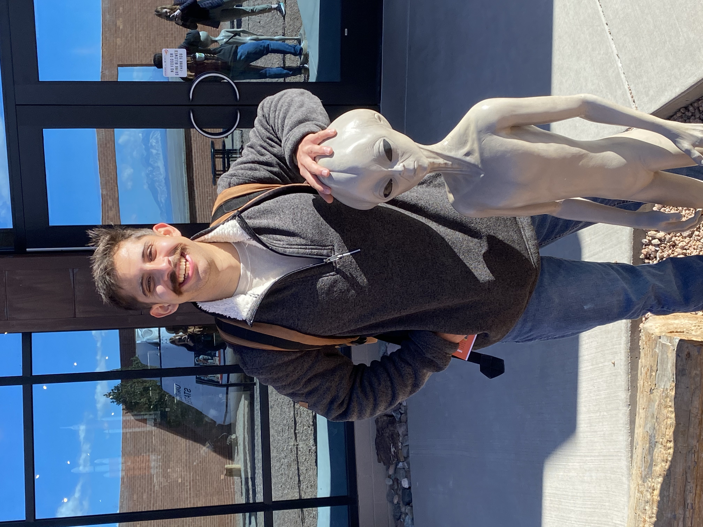

Researcher & Educator
I am deeply committed to bridging the gap between scientific research and public understanding. I actively work on making complex concepts into accessible, engaging narratives that inspire curiosity and promote lifelong learning. By leveraging innovative communication strategies and digital storytelling, I strive to foster scientific literacy and empower diverse audiences to explore and appreciate the wonders of science.
My interest in astrobiology is deeply intertwined with a fascination for the origins of life. I am particularly drawn to the study of hydrothermal vents, which I believe offer a unique window into the energy-rich environments that could have fostered early biological processes. My curiosity about homochirality—how life’s molecules came to favor one “handedness” over the other—drives my exploration of the chemical nuances that underpin biological systems.
My passion for Planetary Sciences centers on understanding both the evolution of ancient Earth and of icy moons. I’m captivated by the idea that these icy worlds, with their hydrothermal activity, may mimic the energy-rich conditions of early Earth. These complex geochemical environments can be sumulated in the lab, allowing us to explore the potential processes that could have driven the emergence of life.
Science Communicator and Educator @ Lowell Observatory
Recent graduate with a B.S. in biology, and I am an aspiring astrobiologist. I’m interested in how life arises and co-evolves with its environment here on Earth and possibly other planets and moons in our solar system and how we can use computational methods to model this.
My time at Lowell Observatory has also shown the importance of communicating science as scientists and educators to the public, as well as between each other, especially in a field as interdisciplinary as astrobiology. I’ve had multiple nights where I’ve gotten to interact with and inspire guests. It has only made me realize how important it is to continue to provide outreach to the public and inspire a new generation of scientists.
A selection of my range of work